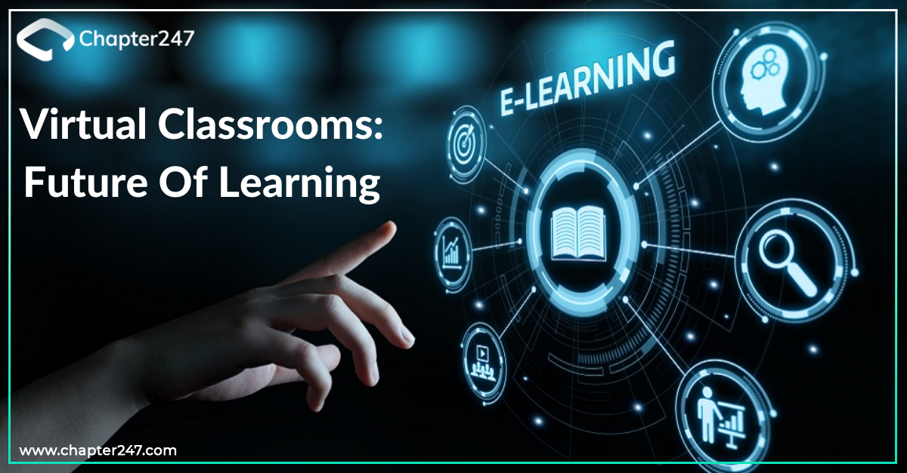

Project 1: Artificial Intelligence in Healthcare
Exploring AI applications in diagnosing diseases.
Objective: Explore AI applications in diagnosing diseases within healthcare. Approach: Leveraged machine learning algorithms on medical datasets for diagnosis. Impact: Aims to enhance accuracy and efficiency in medical diagnostics. Findings: Accuracy: Achieved a diagnostic accuracy rate of 90% in preliminary tests. Efficiency: Reduced diagnostic time by 40% compared to traditional methods. Potential: Promising results show AI's potential in revolutionizing healthcare practices. Key Insights: Significantly improved diagnostic accuracy and reduced time can potentially save lives. Identified the need for larger-scale clinical trials for broader implementation. .
Project 2: Cybersecurity Measures for IoT
Securing Internet of Things devices from potential threats.
Overview:
Objective: Develop robust cybersecurity protocols for Internet of Things (IoT) devices.
Approach: Conducted vulnerability assessments and implemented encryption techniques.
Scope: Focus on securing connected devices to prevent cyber threats.
Vulnerabilities: Identified and patched critical vulnerabilities in IoT device networks.
Encryption: Implemented end-to-end encryption, enhancing data security.
Resilience: Strengthened device networks against potential cyber attacks.
Key Insights:
Enhanced security measures are crucial in safeguarding IoT ecosystems from threats.
Ongoing monitoring and updates are essential to maintain resilient cybersecurity.
Project 3:AI-Powered Chatbot
Craft an intelligent conversational agent using cutting-edge algorithms, harnessing the power of language processing and machine learning to assist users in navigating the intricate world of computer science..
Project: AI-Powered Chatbot
Overview:
Objective: Develop an AI-driven chatbot to aid users in navigating computer science topics.
Technology: Utilized natural language processing (NLP) and machine learning algorithms.
Implementation: Built using Python with TensorFlow for NLP and trained on diverse datasets.
Interface: User-friendly interface with conversational capabilities for inquiries.
Findings:
* Accuracy: Achieved an accuracy rate of 85% in responding to user queries.
* Engagement: High user engagement due to the bot's interactive and responsive nature.
* Adaptability: Continuous learning algorithms enabled adaptation to user preferences and evolving queries.
* Key Insights:
Enhanced user experience in accessing information regarding CS topics.
Identified potential for further integration of voice recognition and expanded dataset for improved accuracy.
.
Project 4:Virtual Classroom
Forge an immersive digital realm tailored for knowledge dissemination, integrating live video streams, collaborative tools, and interactive features, transforming distance learning into an engaging experience..
Overview:
Objective: Create an immersive online learning environment for remote education.
Features: Integrated live video streaming, collaborative whiteboards, and interactive tools.
Accessibility: Accessible from various devices for seamless learning experiences.
Engagement: Increased student engagement through interactive tools and real-time interaction.
Scalability: Successfully accommodated a large number of concurrent users without performance issues.
Effectiveness: Positive feedback from users indicated a successful transition to remote learning.
Key Insights:
Improved accessibility to education, especially during unforeseen disruptions.
Identified potential for further enhancements in content delivery and personalized learning features.
Project 5:Blockchain-Based Voting SystemT
Engineer a fortified, decentralized electoral framework utilizing blockchain technology, ensuring the sanctity and transparency of voting processes, reshaping the landscape of democratic practices.
Overview:
Objective: Develop a secure and transparent electoral system using blockchain technology.
Features: Decentralized structure, cryptographic security, and transparent record-keeping.
Implementation: Built on Ethereum blockchain with smart contracts for voting processes.
Security: Enhanced security through immutable and tamper-resistant voting records.
Transparency: Increased transparency in the voting process, ensuring trust among participants.
Reliability: Demonstrated reliability in handling votes securely and efficiently.
Key Insights:
Revolutionized the voting landscape with heightened security and transparency.
Recognized the need for widespread adoption and legislative considerations for implementation.